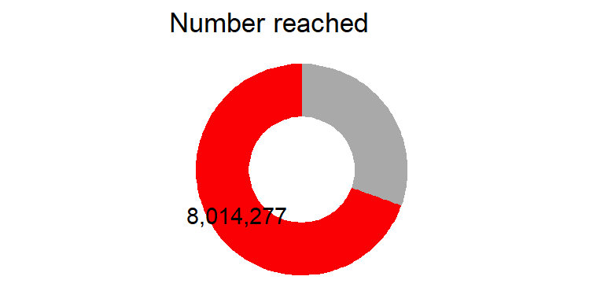

| Characteristic | Overall, N = 2,0021 | Gender | |
|---|---|---|---|
| Female, N = 1,0171 | Male, N = 9851 | ||
| Age | |||
| 15-19 | 1,089 (54%) | 541 (53%) | 548 (56%) |
| 20-24 | 913 (46%) | 476 (47%) | 437 (44%) |
| Location | |||
| Rural | 1,219 (61%) | 608 (60%) | 611 (62%) |
| Urban | 783 (39%) | 409 (40%) | 374 (38%) |
| Education Level | |||
| Incomplete primary | 155 (7.7%) | 80 (7.9%) | 75 (7.6%) |
| Complete primary | 965 (48%) | 461 (45%) | 504 (51%) |
| Complete secondary | 699 (35%) | 374 (37%) | 325 (33%) |
| Secondary and above | 183 (9.1%) | 102 (10%) | 81 (8.2%) |
| 1 n (%) | |||
1 Demographic Characteristics
2 Media Consumption
2.1 Consumption Frequency
This analysis is for all survey respondents.
| Several times a day | At least once a day | Several times a week | At least once a week | Several times a month | Less often | Never | |
|---|---|---|---|---|---|---|---|
| Watch broadcast TV | |||||||
| Percent | 34 | 28 | 8 | 4 | 3 | 15 | 7 |
| Number | 647,449 | 532,140 | 149,520 | 76,207 | 52,989 | 285,853 | 138,564 |
| Watch movies | |||||||
| Percent | 17 | 18 | 8 | 5 | 3 | 18 | 31 |
| Number | 317,240 | 347,778 | 150,361 | 100,926 | 49,003 | 338,324 | 579,090 |
| Listen to the radio | |||||||
| Percent | 34 | 17 | 6 | 5 | 1 | 17 | 19 |
| Number | 647,716 | 318,563 | 110,818 | 102,477 | 27,902 | 318,487 | 356,759 |
| Read local newspapers | |||||||
| Percent | 1 | 4 | 3 | 5 | 3 | 37 | 47 |
| Number | 26,137 | 69,546 | 49,784 | 90,344 | 60,546 | 705,048 | 881,317 |
| Read local cartoon booklets | |||||||
| Percent | 3 | 1 | 3 | 4 | 6 | 50 | 32 |
| Number | 47,750 | 23,688 | 65,076 | 82,401 | 113,137 | 943,207 | 607,462 |
| Use the internet (excluding social networking sites) | |||||||
| Percent | 31 | 15 | 6 | 6 | 2 | 12 | 28 |
| Number | 583,476 | 274,852 | 120,454 | 110,424 | 34,628 | 233,509 | 525,378 |
| Visit social networking sites | |||||||
| Percent | 43 | 13 | 7 | 4 | 1 | 7 | 24 |
| Number | 807,619 | 250,763 | 133,883 | 84,168 | 22,294 | 128,216 | 455,779 |
2.2 Mobile phone ownership
This analysis is for all survey respondents.

- Basic phone – only allows calling, messaging, saving numbers
- Feature phone – has camera, radio, basic internet
- Smartphone – has a touch screen, mobile applications, e.g., WhatsApp, Instagram, TikTok
| # phones | Percentage | Number |
|---|---|---|
| Basic phone | ||
| 0 | 80 | 6,508,660 |
| 1 | 19 | 1,553,318 |
| 2 | 1 | 45,687 |
| 3 | 0 | 34,374 |
| Feature phone | ||
| 0 | 92 | 7,460,568 |
| 1 | 8 | 651,332 |
| 2 | 0 | 30,140 |
| Smartphone | ||
| 0 | 20 | 1,641,347 |
| 1 | 76 | 6,198,844 |
| 2 | 3 | 213,564 |
| 3 | 1 | 47,020 |
| 4 | 0 | 29,753 |
| 6 | 0 | 4,765 |
| 7 | 0 | 6,747 |
3 Reach
3.1 Overall reach


8,014,277 (70%) young people are aware of Shujaaz media.
These results include prompted and un-prompted.
3.2 Reach by persona
Brand awareness across all personas was largely similar, as the differences were not statistically significant (p-value = 0.3294).
3.3 Reach by location

There is strong evidence to suggest that brand awareness levels vary location (p-value < 0.001).
3.4 Reach by county
| County | % Aware | Aware | Unaware |
|---|---|---|---|
| MARSABIT | 6% | 6,556 | 99,181 |
| TANA RIVER | 10% | 4,310 | 38,232 |
| GARISSA | 29% | 79,725 | 192,649 |
| MIGORI | 39% | 115,390 | 177,322 |
| NAROK | 44% | 128,382 | 164,779 |
| NYANDARUA | 47% | 67,264 | 76,778 |
| MOMBASA | 51% | 155,789 | 147,096 |
| TURKANA | 52% | 138,442 | 128,436 |
| ELGEYO MARAKWET | 52% | 45,511 | 42,089 |
| HOMA BAY | 52% | 149,129 | 136,267 |
| BARINGO | 57% | 100,106 | 76,805 |
| KERICHO | 59% | 138,749 | 96,985 |
| KAKAMEGA | 59% | 276,943 | 188,707 |
| KITUI | 60% | 171,576 | 115,767 |
| UASIN GISHU | 61% | 198,766 | 127,501 |
| KISII | 63% | 189,336 | 111,743 |
| KIRINYAGA | 66% | 81,678 | 42,467 |
| KAJIADO | 68% | 207,669 | 97,250 |
| KWALE | 70% | 150,492 | 65,892 |
| MERU | 72% | 253,940 | 100,918 |
| THARAKA NITHI | 73% | 63,394 | 23,459 |
| BOMET | 73% | 172,347 | 63,650 |
| County | % Aware | Aware | Unaware |
|---|---|---|---|
| KILIFI | 74% | 288,600 | 103,492 |
| NYAMIRA | 74% | 97,283 | 34,469 |
| KISUMU | 74% | 226,070 | 78,659 |
| KIAMBU | 74% | 479,399 | 164,550 |
| BUSIA | 75% | 178,309 | 60,687 |
| BUNGOMA | 75% | 330,409 | 109,969 |
| MACHAKOS | 76% | 270,080 | 86,359 |
| MAKUENI | 77% | 186,255 | 54,716 |
| EMBU | 79% | 110,524 | 29,599 |
| NANDI | 81% | 186,114 | 44,070 |
| SIAYA | 83% | 199,380 | 42,024 |
| NYERI | 84% | 129,237 | 25,395 |
| NAKURU | 84% | 479,406 | 91,917 |
| SAMBURU | 85% | 73,214 | 13,058 |
| LAIKIPIA | 85% | 108,091 | 18,538 |
| MURANGA | 86% | 183,372 | 30,898 |
| NAIROBI | 87% | 1,027,577 | 153,758 |
| TRANS NZOIA | 87% | 224,828 | 33,282 |
| WEST POKOT | 89% | 136,759 | 16,257 |
| VIHIGA | 92% | 125,996 | 11,373 |
| TAITA TAVETA | 100% | 77,878 | 0 |
There is strong evidence that brand awareness levels vary by county (p-value < 0.001).
4 Engagement
4.1 Overall engagement


7,024,309 (61%) young people have ever engaged with Shujaaz brand.
These results include those aware and not aware of Shujaaz brand.
4.2 Engagement by persona

Brand engagement across all personas was largely similar, as the differences were not statistically significant (p-value = 0.4605).
4.3 Engagement by location

There is strong evidence to suggest that brand engagement levels vary by location (p-value < 0.001).
4.4 Engagement by county
| County | % Engaged | Engaged | Unengaged |
|---|---|---|---|
| MARSABIT | 0% | 0 | 105,737 |
| TANA RIVER | 0% | 0 | 42,542 |
| SAMBURU | 8% | 6,563 | 79,709 |
| GARISSA | 9% | 23,541 | 248,833 |
| MIGORI | 27% | 77,829 | 214,883 |
| NAROK | 40% | 117,643 | 175,518 |
| NYANDARUA | 40% | 58,149 | 85,893 |
| KERICHO | 43% | 101,382 | 134,352 |
| MOMBASA | 45% | 135,363 | 167,522 |
| BARINGO | 48% | 84,710 | 92,201 |
| HOMA BAY | 48% | 136,748 | 148,648 |
| TURKANA | 48% | 129,210 | 137,668 |
| ELGEYO MARAKWET | 52% | 45,511 | 42,089 |
| VIHIGA | 52% | 71,999 | 65,370 |
| KAKAMEGA | 54% | 253,473 | 212,177 |
| KITUI | 55% | 158,728 | 128,615 |
| KISII | 57% | 170,640 | 130,439 |
| KIRINYAGA | 60% | 74,383 | 49,762 |
| MERU | 60% | 214,486 | 140,372 |
| KIAMBU | 61% | 390,297 | 253,652 |
| UASIN GISHU | 61% | 198,766 | 127,501 |
| County | % Engaged | Engaged | Unengaged |
|---|---|---|---|
| BUNGOMA | 61% | 270,343 | 170,035 |
| BOMET | 63% | 149,125 | 86,872 |
| KAJIADO | 64% | 193,873 | 111,046 |
| TRANS NZOIA | 64% | 164,463 | 93,647 |
| NYAMIRA | 64% | 84,345 | 47,407 |
| KILIFI | 65% | 254,479 | 137,613 |
| KWALE | 65% | 141,081 | 75,303 |
| WEST POKOT | 69% | 105,645 | 47,371 |
| EMBU | 71% | 99,551 | 40,572 |
| BUSIA | 72% | 170,962 | 68,034 |
| KISUMU | 72% | 219,828 | 84,901 |
| THARAKA NITHI | 73% | 63,394 | 23,459 |
| MACHAKOS | 75% | 265,680 | 90,759 |
| NAKURU | 75% | 429,445 | 141,878 |
| MAKUENI | 77% | 186,255 | 54,716 |
| NAIROBI | 78% | 919,328 | 262,007 |
| MURANGA | 78% | 167,007 | 47,263 |
| NANDI | 78% | 179,502 | 50,682 |
| NYERI | 81% | 125,233 | 29,399 |
| SIAYA | 83% | 199,380 | 42,024 |
| LAIKIPIA | 85% | 108,091 | 18,538 |
| TAITA TAVETA | 100% | 77,878 | 0 |
There is strong evidence that brand engagement levels vary by county (p-value < 0.001).
4.5 Media usage
For this analysis, respondents were asked about the frequency using Shujaaz media across various platforms. Those who refused or dont know are included in the calculations but excluded from the visuals.
4.5.1 Comic

4.5.2 Watched STRA

4.5.3 Shujaaz Kenya

4.5.4 Shujaaz Biz

4.5.5 SMS Usage
4.5.6 Maria Kim
4.5.7 Malkia

4.5.8 Charlie Pele

4.5.9 DJB

5 Agency Models
5.1 Sense of self-belief
5.1.1 Users
5.1.1.1 All personas
The chart below is for all personas who have ever engaged with Shujaaz media.

| Indicator | Strongly disagree | Disagree | Neutral | Agree | Strongly agree |
|---|---|---|---|---|---|
| I will be able to achieve most of the goals that I set for myself | 0 | 1 | 5 | 26 | 68 |
| When facing difficult tasks, I am certain that I will accomplish them | 0 | 2 | 8 | 34 | 56 |
| I think that I can obtain outcomes that are important to me | 0 | 1 | 7 | 37 | 55 |
| I believe I can succeed at most any endeavor to which I set my mind | 0 | 1 | 6 | 34 | 58 |
| I will be able to successfully overcome many challenges | 0 | 1 | 5 | 35 | 57 |
| I am confident that I can perform effectively on many different tasks | 0 | 2 | 8 | 35 | 56 |
| Compared to other people, I can do most tasks very well | 0 | 2 | 10 | 35 | 52 |
| Even when things are tough, I can perform quite well | 1 | 2 | 7 | 36 | 54 |
5.1.1.2 Barasa
The chart below is for all Barasa ever engaged with Shujaaz media.

| Indicator | Strongly disagree | Disagree | Neutral | Agree | Strongly agree |
|---|---|---|---|---|---|
| I will be able to achieve most of the goals that I set for myself | 0 | 1 | 6 | 25 | 67 |
| When facing difficult tasks, I am certain that I will accomplish them | 0 | 1 | 7 | 36 | 56 |
| I think that I can obtain outcomes that are important to me | 0 | 1 | 5 | 37 | 57 |
| I believe I can succeed at most any endeavor to which I set my mind | 0 | 1 | 5 | 36 | 58 |
| I will be able to successfully overcome many challenges | 0 | 2 | 5 | 38 | 56 |
| I am confident that I can perform effectively on many different tasks | 1 | 1 | 6 | 36 | 57 |
| Compared to other people, I can do most tasks very well | 0 | 3 | 9 | 34 | 54 |
| Even when things are tough, I can perform quite well | 1 | 1 | 6 | 39 | 53 |
5.1.1.3 Boni
The chart below is for all Boni ever engaged with Shujaaz media.

| Indicator | Strongly disagree | Disagree | Neutral | Agree | Strongly agree |
|---|---|---|---|---|---|
| I will be able to achieve most of the goals that I set for myself | 1 | 0 | 5 | 26 | 68 |
| When facing difficult tasks, I am certain that I will accomplish them | 1 | 2 | 9 | 33 | 56 |
| I think that I can obtain outcomes that are important to me | 1 | 1 | 7 | 42 | 48 |
| I believe I can succeed at most any endeavor to which I set my mind | 1 | 1 | 6 | 34 | 58 |
| I will be able to successfully overcome many challenges | 1 | 1 | 6 | 33 | 60 |
| I am confident that I can perform effectively on many different tasks | 1 | 2 | 9 | 32 | 56 |
| Compared to other people, I can do most tasks very well | 1 | 3 | 11 | 36 | 50 |
| Even when things are tough, I can perform quite well | 2 | 1 | 9 | 32 | 55 |
5.1.1.4 Nana
The chart below is for all Nana ever engaged with Shujaaz media.
| Indicator | Strongly disagree | Disagree | Neutral | Agree | Strongly agree |
|---|---|---|---|---|---|
| I will be able to achieve most of the goals that I set for myself | 0 | 1 | 4 | 26 | 70 |
| When facing difficult tasks, I am certain that I will accomplish them | 0 | 2 | 7 | 35 | 56 |
| I think that I can obtain outcomes that are important to me | 0 | 1 | 5 | 34 | 60 |
| I believe I can succeed at most any endeavor to which I set my mind | 0 | 1 | 6 | 33 | 60 |
| I will be able to successfully overcome many challenges | 0 | 1 | 5 | 36 | 58 |
| I am confident that I can perform effectively on many different tasks | 0 | 2 | 7 | 36 | 55 |
| Compared to other people, I can do most tasks very well | 0 | 2 | 8 | 36 | 53 |
| Even when things are tough, I can perform quite well | 0 | 2 | 6 | 39 | 52 |
5.1.1.5 Nina
The chart below is for all Nina ever engaged with Shujaaz media.

| Indicator | Strongly disagree | Disagree | Neutral | Agree | Strongly agree |
|---|---|---|---|---|---|
| I will be able to achieve most of the goals that I set for myself | 0 | 0 | 6 | 28 | 66 |
| When facing difficult tasks, I am certain that I will accomplish them | 0 | 1 | 11 | 32 | 56 |
| I think that I can obtain outcomes that are important to me | 0 | 2 | 9 | 34 | 54 |
| I believe I can succeed at most any endeavor to which I set my mind | 0 | 1 | 8 | 34 | 57 |
| I will be able to successfully overcome many challenges | 1 | 1 | 7 | 35 | 56 |
| I am confident that I can perform effectively on many different tasks | 0 | 2 | 9 | 35 | 54 |
| Compared to other people, I can do most tasks very well | 1 | 2 | 11 | 35 | 52 |
| Even when things are tough, I can perform quite well | 1 | 3 | 7 | 33 | 57 |
5.1.2 Non-users
5.1.2.1 All personas
The chart below is for all personas who have Never engaged with Shujaaz media.

| Indicator | Strongly disagree | Disagree | Neutral | Agree | Strongly agree |
|---|---|---|---|---|---|
| I will be able to achieve most of the goals that I set for myself | 1 | 1 | 6 | 35 | 56 |
| When facing difficult tasks, I am certain that I will accomplish them | 1 | 2 | 10 | 40 | 48 |
| I think that I can obtain outcomes that are important to me | 1 | 1 | 10 | 41 | 46 |
| I believe I can succeed at most any endeavor to which I set my mind | 0 | 2 | 10 | 40 | 48 |
| I will be able to successfully overcome many challenges | 1 | 2 | 10 | 38 | 49 |
| I am confident that I can perform effectively on many different tasks | 0 | 2 | 10 | 43 | 44 |
| Compared to other people, I can do most tasks very well | 0 | 2 | 12 | 42 | 43 |
| Even when things are tough, I can perform quite well | 1 | 2 | 10 | 41 | 46 |
5.1.2.2 Barasa
The chart below is for all Barasa Never engaged with Shujaaz media.

| Indicator | Strongly disagree | Disagree | Neutral | Agree | Strongly agree |
|---|---|---|---|---|---|
| I will be able to achieve most of the goals that I set for myself | 0 | 1 | 6 | 31 | 62 |
| When facing difficult tasks, I am certain that I will accomplish them | 1 | 1 | 12 | 35 | 51 |
| I think that I can obtain outcomes that are important to me | 0 | 0 | 13 | 41 | 46 |
| I believe I can succeed at most any endeavor to which I set my mind | 0 | 1 | 10 | 38 | 51 |
| I will be able to successfully overcome many challenges | 0 | 0 | 10 | 44 | 46 |
| I am confident that I can perform effectively on many different tasks | 0 | 0 | 10 | 49 | 40 |
| Compared to other people, I can do most tasks very well | 0 | 2 | 16 | 39 | 43 |
| Even when things are tough, I can perform quite well | 0 | 0 | 14 | 38 | 48 |
5.1.2.3 Boni
The chart below is for all Boni Never engaged with Shujaaz media.

| Indicator | Strongly disagree | Disagree | Neutral | Agree | Strongly agree |
|---|---|---|---|---|---|
| I will be able to achieve most of the goals that I set for myself | 1 | 1 | 6 | 37 | 56 |
| When facing difficult tasks, I am certain that I will accomplish them | 0 | 2 | 8 | 41 | 49 |
| I think that I can obtain outcomes that are important to me | 1 | 1 | 10 | 41 | 47 |
| I believe I can succeed at most any endeavor to which I set my mind | 0 | 3 | 8 | 43 | 46 |
| I will be able to successfully overcome many challenges | 1 | 3 | 9 | 36 | 51 |
| I am confident that I can perform effectively on many different tasks | 0 | 2 | 9 | 42 | 47 |
| Compared to other people, I can do most tasks very well | 0 | 3 | 9 | 44 | 44 |
| Even when things are tough, I can perform quite well | 2 | 2 | 7 | 44 | 45 |
5.1.2.4 Nana
The chart below is for all Nana Never engaged with Shujaaz media.

| Indicator | Strongly disagree | Disagree | Neutral | Agree | Strongly agree |
|---|---|---|---|---|---|
| I will be able to achieve most of the goals that I set for myself | 0 | 1 | 7 | 38 | 54 |
| When facing difficult tasks, I am certain that I will accomplish them | 1 | 2 | 13 | 43 | 42 |
| I think that I can obtain outcomes that are important to me | 1 | 2 | 10 | 48 | 39 |
| I believe I can succeed at most any endeavor to which I set my mind | 0 | 2 | 11 | 42 | 45 |
| I will be able to successfully overcome many challenges | 0 | 3 | 10 | 43 | 44 |
| I am confident that I can perform effectively on many different tasks | 1 | 2 | 10 | 46 | 41 |
| Compared to other people, I can do most tasks very well | 0 | 3 | 12 | 47 | 39 |
| Even when things are tough, I can perform quite well | 0 | 2 | 11 | 43 | 43 |
5.1.2.5 Nina
The chart below is for all Nina Never engaged with Shujaaz media.

| Indicator | Strongly disagree | Disagree | Neutral | Agree | Strongly agree |
|---|---|---|---|---|---|
| I will be able to achieve most of the goals that I set for myself | 0 | 2 | 7 | 36 | 55 |
| When facing difficult tasks, I am certain that I will accomplish them | 1 | 2 | 8 | 39 | 50 |
| I think that I can obtain outcomes that are important to me | 1 | 2 | 9 | 34 | 55 |
| I believe I can succeed at most any endeavor to which I set my mind | 1 | 3 | 12 | 34 | 51 |
| I will be able to successfully overcome many challenges | 1 | 2 | 12 | 27 | 59 |
| I am confident that I can perform effectively on many different tasks | 1 | 2 | 12 | 35 | 50 |
| Compared to other people, I can do most tasks very well | 1 | 1 | 13 | 36 | 49 |
| Even when things are tough, I can perform quite well | 1 | 2 | 9 | 38 | 50 |
5.2 Optimistic about future
| Persona | Overall | User | Non user |
|---|---|---|---|
| Barasa | 83 | 83 | 82 |
| Boni | 82 | 80 | 85 |
| Nana | 82 | 78 | 87 |
| Nina | 81 | 82 | 79 |
6 Money
6.1 Money Management
Question : I know how to manage the little money I have to take care of my needs.
65% of young people who have ever used Shujaaz media manage their money well, compared to 53% for those who have never (P value <0.0001).